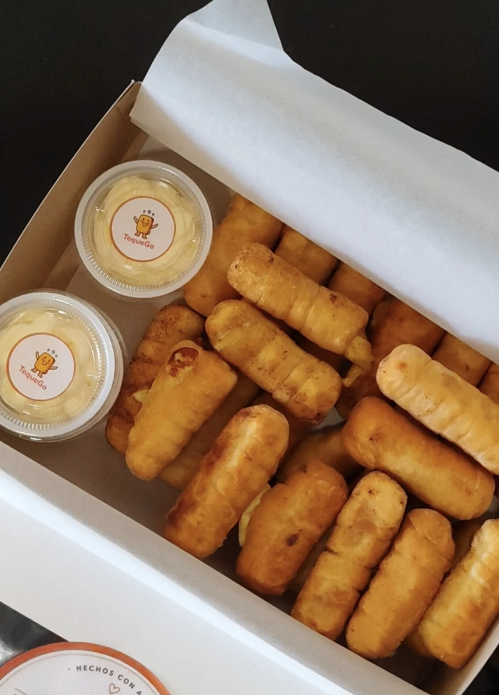

EUSKA YA · DESCUBRÍ

TequeñosTequeGo
Tu próximo
antojo tiene nombre.
Conocé TequeGo, elegí tu pack y descubrí sus promociones.
DESCUBRIR PROMOSComida y bebidas a un WhatsApp de distancia.
Locales y propuestas de tequeños.
Estamos incorporando los primeros locales. Pronto podrás consultar horarios y coordinar tu pedido directamente por WhatsApp.

TequeñosTu próximo
antojo tiene nombre.
Conocé TequeGo, elegí tu pack y descubrí sus promociones.
DESCUBRIR PROMOSConocé los packs, precios y opciones disponibles en su ficha.
VER PACKS Y PROMOCIONESPresentá tu negocio con fotos, menú, horarios y WhatsApp directo. Los vecinos podrán coordinar sus pedidos y la entrega con vos.
Sumar mi local